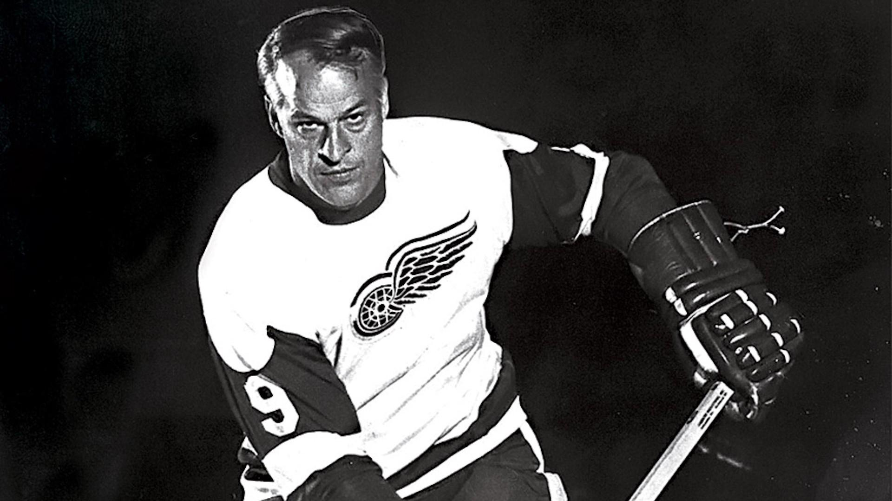
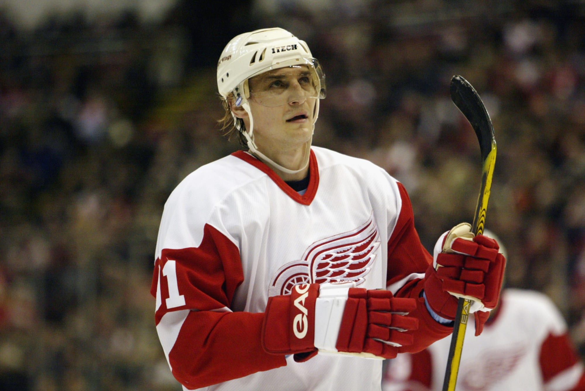
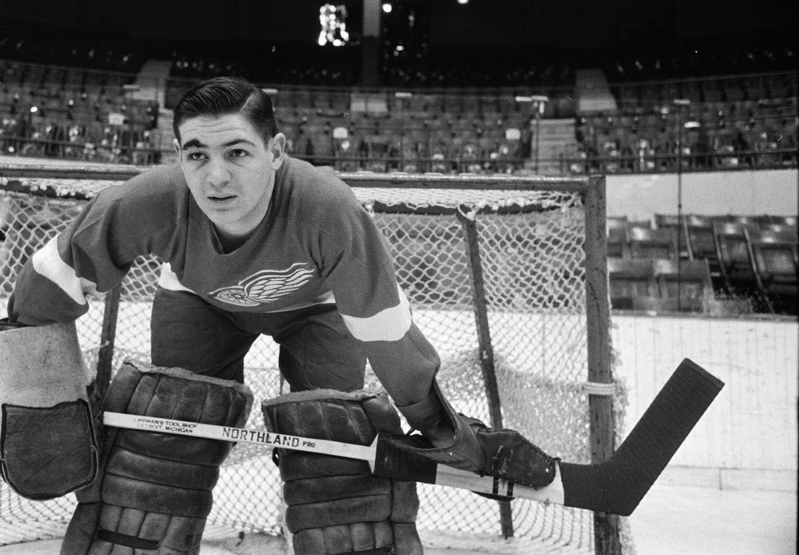

Gordie Howe is one of the best players to ever play in the NHL. Today he still holds many records, and is second in career goals in the NHL. Photo Credit: Kat Law
#4 Red Kelly - Forward
Red Kelly played in the NHL for 20 seasons. During his playing time he won 8 Stanley Cups as a member of the Detroit Red Wings and Toronto Maple Leafs. Photo Credit: Detroitredwings.com
#19 Steve Yzerman - Forward
Steve Yzerman is one of the most famous Red Wing's players. He played on the Detroit Red Wings for 22 years and served as team captain for 20 of those years. Photo Credit: Bruce Bennett Studios/Getty Images
#91 Sergei Fedorov - Forward

Sergei Fedorov played 13 seasons with Detroit. He won 3 Stanley Cups with Detroit and was the first Russian player to reach 1,000 games played in the NHL. Photo Credit: Bildbyran
#14 Brendan Shanahan - Forward
Brendan Shanahan joined the Detroit Red Wings during 1997 season where he would go on to win three Stanley Cups with the Red Wings. Photo Credit: Collin Newby/TheHockeyWriters
#13 Pavel Datsyuk - Forward
Pavel Datsyuk was nicknamed "the magic man". He always found new ways to score in the NHL, he developed many dekes to throw defenders and goaltenders alike off their game. Photo Credit: Dmitry Chesnokov
#7 Ted Lindsay - Forward
Ted Lindsay won 4 Stanley Cups with the Detroit Red Wings. He was known for his lightning speed and scoring touch. Yet, he still played a very rugged and physical game. Photo Credit: Associated Press
#5 Nicklas Lidstrom - Defenseman
Nicklas Lidstrom is one of the best defenseman the NHL has ever seen. During his time in Detroit he won 4 Stanley Cups and served as team captain for 6 years. Photo Credit: REUTERS/Jeff Kowalsky
#1 Terry Sawchuck - Goaltender

Terry Sawchuck had three separate stints with the Detroit Red Wings. Throughout his stints with the Red Wings he won three Stanley Cups. Photo Credit: Global Vintage Sports
#39 Dominik Hasek - Goaltender
Dominik Hasek won two Stanley Cups with the Detroit Red Wings in 2002 and 2008. Hasek is widely regarded as one of the best goaltenders of all time. Photo Credit: Gregory Shamus/Getty Images>